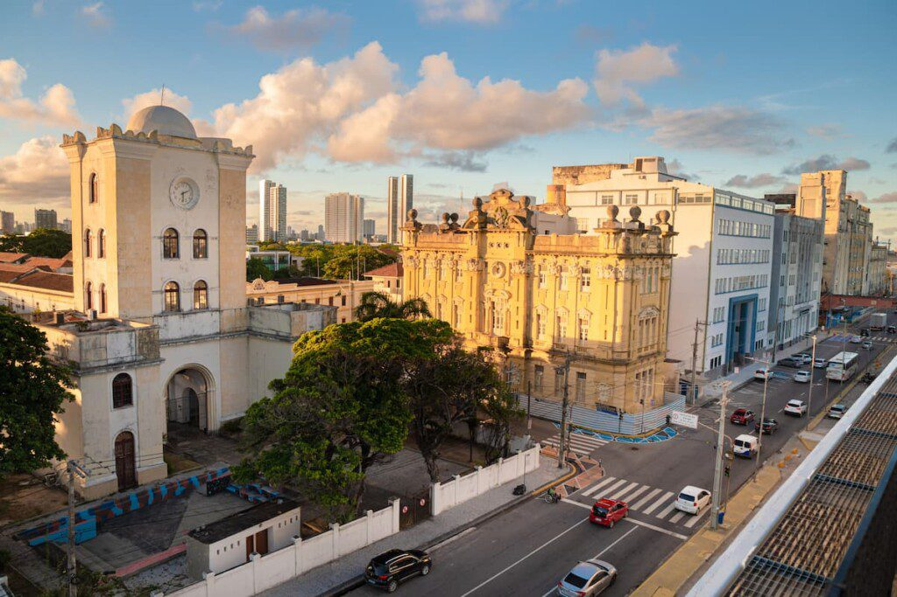

Sobre
O bairro conhecido como Recife Antigo é pura cultura, as igrejas, seu traçado e construções são um exemplo de uma urbanização e arquitetura que não deixam a desejar a qualquer capital do mundo. Cada ida (perdi a conta de quantas vezes por lá estive) promove uma nova descoberta, cada detalhe tem sua própria beleza, cuja culminância é o Marco Zero, o Centro de Artesanato de Pernambuco e o Seu Boteco, grandes atrações
